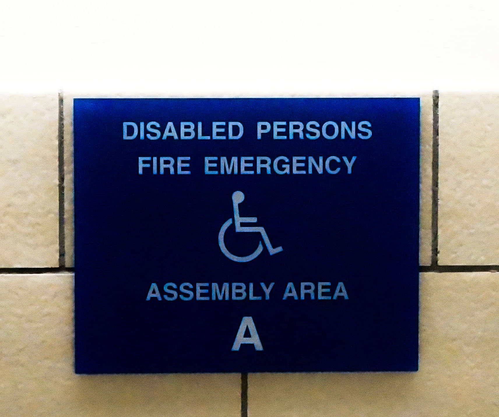
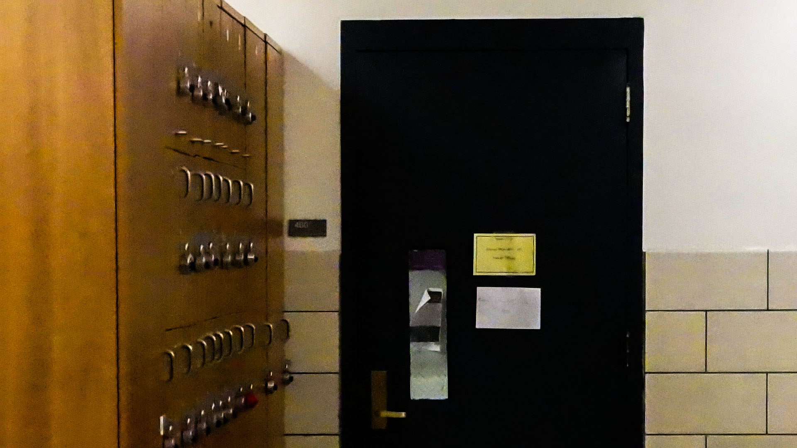

I mainly played with the contrast of the layers in this photo. I tried to make a heavy contrast between the sign, the white wall, and the tile wall.

When I took this image it was pretty grainy, but I decided to keep it like that. In photoshop I made the shadows more intense and everything overall slightly darker so that the door almost becomes completely black.